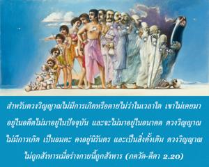
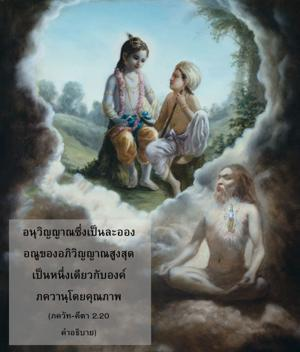
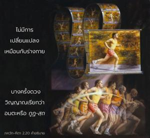

สำหรับดวงวิญญาณไม่มีการเกิดหรือตาย ไม่ว่าในเวลาใด เขาไม่เคยมาอยู่ในอดีต ไม่มาอยู่ในปัจจุบัน และจะไม่มาอยู่ในอนาคต ดวงวิญญาณไม่มีการเกิด เป็นอมตะ คงอยู่นิรันดร และเป็นสิ่งดั้งเดิม ดวงวิญญาณนั้นจะไม่ถูกสังหารเมื่อร่างกายนี้ถูกสังหาร



อนุวิญญาณซึ่งเป็นละอองอณูของอภิวิญญาณสูงสุดเป็นหนึ่งเดียวกับองค์ภควานฺโดยคุณภาพ ไม่มีการเปลี่ยนแปลงเหมือนกับร่างกาย บางครั้งดวงวิญญาณเรียกว่าอมตะหรือ กูฏ-สฺถ ร่างกายมีการเปลี่ยนแปลงหกขั้นตอน มีการเกิดจากครรภ์มารดา คงอยู่ระยะหนึ่ง เจริญเติบโต สืบพันธุ์ ค่อยๆหดตัวลง และในที่สุดก็สูญสลายไป อย่างไรก็ดีดวงวิญญาณไม่ต้องผ่านขั้นตอนการเปลี่ยนแปลงเช่นนี้ ดวงวิญญาณไม่ต้องเกิดแต่เพราะว่าดวงวิญญาณรับเอาร่างวัตถุร่างกายจึงเกิด ดวงวิญญาณมิได้เกิดที่นี่และดวงวิญญาณไม่เคยตาย อะไรที่มีการเกิดย่อมมีการตาย เป็นเพราะว่าดวงวิญญาณไม่มีการเกิดฉะนั้นจึงไม่มีอดีต ไม่มีปัจจุบัน หรือไม่มีอนาคต ดวงวิญญาณเป็นอมตะ คงอยู่เสมอ และเป็นสิ่งดั้งเดิม หมายความว่าไม่มีประวัติศาสตร์ที่บ่งชี้การมาอยู่ของดวงวิญญาณ จากความรู้สึกทางร่างกายเราจึงค้นหาประวัติการเกิดของดวงวิญญาณ ดวงวิญญาณไม่มีการแก่เหมือนกับร่างกาย ดังนั้นจะเห็นได้ว่าบุคคลผู้สูงอายุยังรู้สึกว่าตนเองมีสปิริตเหมือนตอนเป็นเด็กหรือวัยรุ่น การเปลี่ยนแปลงของร่างกายไม่มีผลกระทบต่อดวงวิญญาณ ดวงวิญญาณไม่เสื่อมโทรมเหมือนต้นไม้หรือสิ่งใดๆที่เป็นวัตถุ ดวงวิญญาณไม่มีการสืบพันธุ์และผลผลิตของร่างกาย เช่น บุตร ธิดา ก็เป็นปัจเจกวิญญาณแต่ละดวงเช่นกัน แต่เนื่องมาจากร่างกายวัตถุพวกเขาจึงปรากฏว่าเป็นบุตร ธิดา ของชายคนนั้น ร่างกายเจริญเติบโตได้เพราะมีดวงวิญญาณอยู่ แต่ดวงวิญญาณไม่มีทั้งเชื้อสายหรือการเปลี่ยนแปลง ฉะนั้นดวงวิญญาณจึงเป็นอิสระจากการเปลี่ยนแปลงทั้งหกขั้นตอนของร่างกาย
ใน กฐ อุปนิษทฺ (1.2.18) เราพบข้อความคล้ายกันนี้
น ชายเต มฺริยเต วา วิปศฺจินฺ
นายํ กุตศฺจินฺ น พภูว กศฺจิตฺ
อโช นิตฺยห์ ศาศฺวโต ’ยํ ปุราโณ
น หนฺยเต หนฺยมาเน ศรีเร
ความหมายและคำอธิบายของโศลกนี้เหมือนกับ ภควัท-คีตา แต่ในโศลกนี้มีคำพิเศษคำหนึ่ง วิปศฺจิตฺ ซึ่งหมายความว่ารู้หรือด้วยความรู้
ดวงวิญญาณเต็มไปด้วยความรู้หรือเต็มไปด้วยจิตสำนึกอยู่เสมอ ดังนั้นจิตสำนึกจึงเป็นลักษณะอาการของดวงวิญญาณ แม้ว่าเราไม่พบดวงวิญญาณในหัวใจที่เขาสถิตอยู่ แต่เราจะเข้าใจได้ว่าดวงวิญญาณมีอยู่เพราะเรามีจิตสำนึก บางครั้งเราไม่เห็นดวงอาทิตย์บนท้องฟ้าเพราะก้อนเมฆมาบดบังหรือด้วยเหตุผลอื่นแต่แสงอาทิตย์จะมีอยู่เสมอ และทำให้เรามั่นใจได้ว่าเป็นเวลากลางวัน ทันทีที่มีแสงเพียงเล็กน้อยบนท้องฟ้าในตอนเช้าเราเข้าใจว่าดวงอาทิตย์อยู่บนท้องฟ้า ในลักษณะเดียวกันเพราะว่ามีจิตสำนึกอยู่ในทุกๆร่างไม่ว่าคนหรือสัตว์เราจึงเข้าใจได้ว่ามีดวงวิญญาณสถิตอยู่ อย่างไรก็ดี จิตสำนึกของดวงวิญญาณนี้แตกต่างจากจิตสำนึกขององค์ภควานฺ เพราะว่าจิตสำนึกขององค์ภควานฺทรงเป็นสัพพัญญู รู้ทั้งหมดทั้งในอดีต ปัจจุบัน และอนาคต จิตสำนึกของปัจเจกวิญญาณมีแนวโน้มที่จะหลงลืม เมื่อหลงลืมธรรมชาติอันแท้จริงของตนเองเขาได้รับการศึกษาและความรู้แจ้งจากบทเรียนที่สูงกว่าขององค์กฺฤษฺณ แต่องค์กฺฤษฺณทรงไม่เหมือนกับดวงวิญญาณผู้หลงลืม หากเป็นเช่นนี้คำสอนของพระองค์ใน ภควัท-คีตา ก็จะไร้คุณค่า
มีดวงวิญญาณอยู่สองประเภทคือ อนุวิญญาณ ( อณุ-อาตฺมา ) และอภิวิญญาณ ( วิภุ-อาตฺมา ) ได้ยืนยันไว้ใน กฐ อุปนิษทฺ (1.2.20) เช่นกันว่า
อโณรฺ อณียานฺ มหโต มหียานฺ
อาตฺมาสฺย ชนฺโตรฺ นิหิโต คุหายามฺ
ตมฺ อกฺรตุห์ ปศฺยติ วีต-โศโก
ธาตุห์ ปฺรสาทานฺ มหิมานมฺ อาตฺมนห์
“ทั้งอภิวิญญาณ ( ปรมาตฺมา ) และอนุวิญญาณ ( ชีวาตฺมา ) สถิตอยู่บนต้นไม้แห่งร่างเดียวกันภายในหัวใจดวงเดียวกันของสิ่งมีชีวิต ผู้ที่เป็นอิสระจากความต้องการทางวัตถุและความเศร้าโศกทั้งหมดเท่านั้นจึงจะสามารถเข้าใจถึงความเลิศเลอของดวงวิญญาณได้ด้วยพระกรุณาธิคุณขององค์ภควานฺ” องค์กฺฤษฺณทรงเป็นแหล่งกำเนิดของอภิวิญญาณด้วยเช่นกัน ดังจะเปิดเผยในบทต่อๆไป และ อรฺชุน ทรงเป็นอนุวิญญาณที่หลงลืมธรรมชาติอันแท้จริงของตนเอง ฉะนั้นจึงจำเป็นต้องได้รับแสงสว่างจากองค์กฺฤษฺณ หรือจากผู้แทนที่เชื่อถือได้ของพระองค์ (พระอาจารย์ทิพย์)